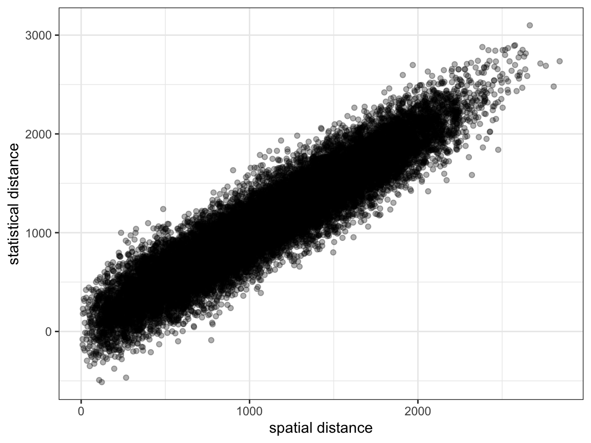
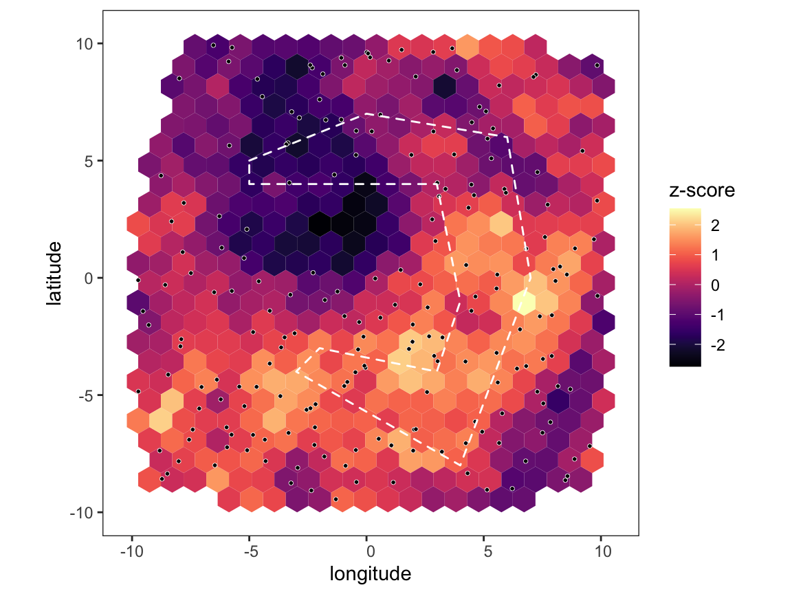

Range-limited analysis
Bob Verity and Keith Fraser
2020-02-07
range_limited_analysis.RmdSometimes barriers/corridors of gene flow can act at different spatial scales. For example, a river might be a barrier to human movement when on foot but not at longer distances because people tend to drive and so can quickly access the nearest road bridge. We can explore this phenomenon in PlasmoMAPI by restricting our analysis to edges of a certain length, and ignoring anything outside the defined range. In some cases this can lead to sharper inference by reducing the amount of random noise in the data.
Simulating and loading data
We assume a uniform scatter of sampling locations, which we load into a new project.
# assume uniform scatter of sampling locations
node_df <- data.frame(long = runif(2e2, -10, 10),
lat = runif(2e2, -10, 10))
# create project and map
p <- pm_project() %>%
load_coords(node_df$long, node_df$lat) %>%
create_map() %>%
assign_map(pb_markdown = TRUE)
#> Creating hex map
#> hex size chosen automatically: 0.968
#> 481 hexagons created
#> Assigning edges to hexes
#>
|
|======================================================================| 100%As in the previous tutorial we will simulate some data with a known barrier to gene flow using the get_barrier_intersect() function. This time we will assume a more detailed barrier shape to test our ability to detect small and complex features.
# create barrier polygon
barrier_list <- list(data.frame(long = c(-5,0,6,7,4,-3,-2,3,4,3,-5,-5),
lat = c(5,7,6,0,-8,-4,-3,-4,-1,4,4,5)))
# plot map with barriers
plot_map(p, barrier_list = barrier_list)The argument max_barrier_range in get_barrier_intersect() allows us to define a spatial distance beyond which the barrier penalty does not apply, for example if max_barrier_range = 100 and two sampling locations are either side of the barrier and separated by 110km then the barrier effectively does not exist between these locations. We will use this mtehod to simulate pairwise genetic distances between sampling locations, this time on the [-Inf,Inf] interval rather than the [0,1] interval just for a change.
# calculate distances, taking into account barriers
sim_dist <- get_barrier_intersect(node_df$long, node_df$lat,
barrier_list = barrier_list,
barrier_penalty = -50,
barrier_method = 2,
max_barrier_range = 500)
# add some noise to the data
sim_dist_noise <- sim_dist + rnorm(length(sim_dist), sd = 2e2)
genetic_distance <- as.matrix(as.dist(sim_dist_noise))Create a project, load the data, and look at a simple plot of spatial vs. genetic distance.

As before, it is quite difficult to see any systematic pattern in the data.
Running a range-limited analysis
Now let’s see what happens when we carry out the PlasmoMAPI analysis over the entire range of data, and then a second time restricting to distances less than 500km:
# run analysis over all distance and plot map
p <- pm_analysis(p, max_dist = Inf, pb_markdown = TRUE)
#> Pre-processing
#> Carrying out permutation test
#>
|
|======================================================================| 100%
plot_map(p, barrier_list = barrier_list)
# run analysis over short distance and plot map
p <- pm_analysis(p, max_dist = 500, pb_markdown = TRUE)
#> Pre-processing
#> Carrying out permutation test
#>
|
|======================================================================| 100%
plot_map(p, barrier_list = barrier_list)
Notice that we didn’t find any areas of significance when using the whole dataset because the random noise at distances above 500km was washing out any signal, but when restricting to short distances the barrier becomes clear. However, throwing data away like this comes at a cost - there are now quite a number of hexes that are below our required coverage level, and so are shown in grey. The more we subset the data, the fewer edges we we have at our disposal and the fewer hexes will pass our coverage checks. So, performing a focussed analysis like this is a trade-off between precision and statistical power, and how far you can push it will depend on the number of sampling locations at hand.